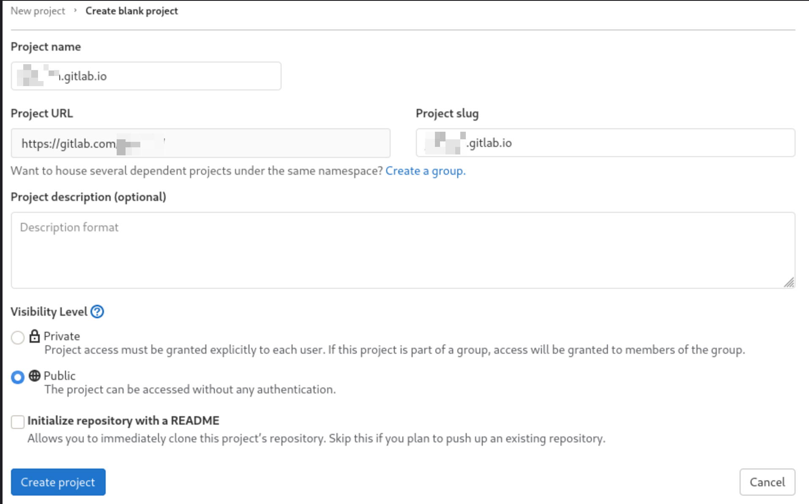
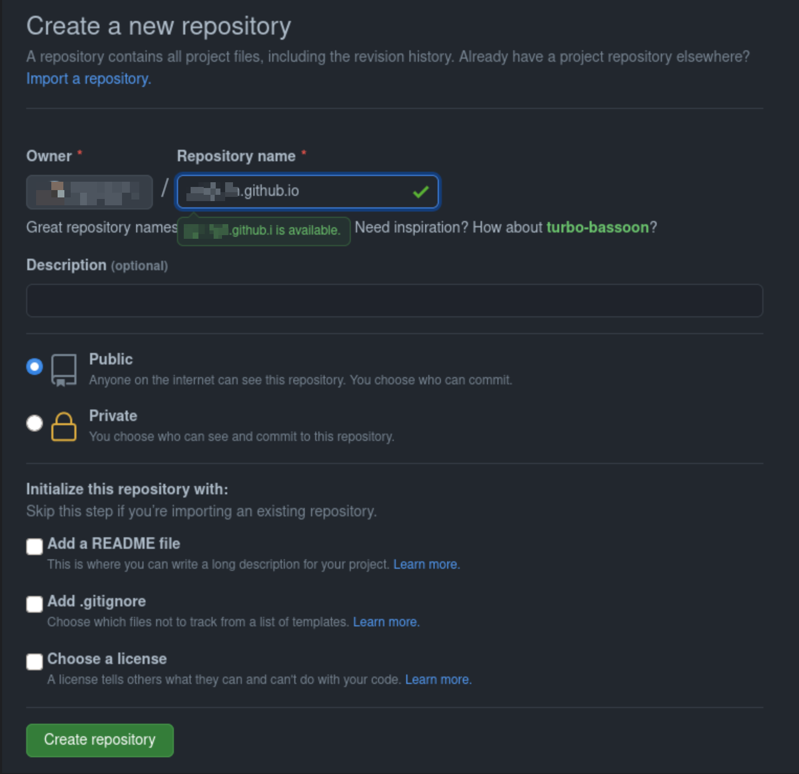

🚧 Gitlab and Github pages handling the same code 🤓
Hello,
This small blog is as you may know hosted by github page or gitlab pages, it depends where you are :)
Gonna tell you a small trick to have your static website hosted on github + gitlab, with the same source code.
Why ? If one fall of course ! :D And also because it's fun, at least i think it's fun :)
Gitlab - Master
- create our static website repo
- add web stuff inside the repo
- configure CI
create our static website repo
let's pretend our repo name is upcreid.gitlab.io and it's a hugo static website.
Let's create it and make it public

then the usual stuff:
git clone git@gitlab.com:upcreid/upcreid.gitlab.io.git
cd upcreid.gitlab.io
touch README.md
git add README.md
git commit -m "add README"
git push -u origin master
create gh-pages branch
before going further we'll need to create a gh-pages branch on gitlab side, this in order to not break the CI when pushing without a gh-pages branch.
Go then !
git checkout --orphan gh-pages
git rm --cached -r .
git commit -m "new gh-pages branch" --allow-empty
git push origin gh-pages
go back to master
git checkout master
add web stuff inside the repo
Ok, now let's add some code inside to have some static shit in there.
- Install hugo
- Create new site
hugo new site --force .
- Install a theme
git submodule add https://github.com/theNewDynamic/gohugo-theme-ananke.git themes/ananke
- add the theme, name and remove baseURL to the conf file
echo $'languageCode = \"en-us\"\ntitle = \"upcreid.gitlab.io\"\ntheme = \"ananke\"' > config.toml
- Start the server to verify if everythin goes ok
hugo server
- Commit
git add .
git commit -m "add basic hugo"
git push
configure CI
Complicated !
Just add one more file to the repo...
.gitlab-ci.yml
image: registry.gitlab.com/pages/hugo:latest
variables:
GIT_SUBMODULE_STRATEGY: recursive
pages:
script:
- hugo -b "https://upcreid.gitlab.io"
artifacts:
paths:
- public
only:
- master
- Commit
git add .
git commit -m "add basic hugo"
git push
and voila => https://upcreid.gitlab.io
Now, let's handle github.
Github - Mirror
- create our static website repo
- branch configuration
- git mirror
- configure CI
create our static website repo

Branch configuration
After creation, create a branch called master. To be in phase with gitlab
echo "# upcreid.github.io" >> README.md
git init
git add README.md
git commit -m "first commit"
git branch -M master
git remote add origin git@github.com:upcreid/upcreid.github.io.git
git push -u origin master
Git mirror
Main part of this is to trigger the mirroring on gitlab side. So inside gitlab repo, simply launch
git remote add --mirror=push github git@github.com:upcreid/upcreid.github.io.git
So, we add a remote, and say it's a mirror (--mirror) and we name it github.
Verify
git remote -v
you should have something like:
github git@github.com:upcreid/upcreid.github.io.git (fetch)
github git@github.com:upcreid/upcreid.github.io.git (push)
origin git@gitlab.com:upcreid/upcreid.gitlab.io.git (fetch)
origin git@gitlab.com:upcreid/upcreid.gitlab.io.git (push)
configure CI
Then create the github CI file, we'll use the github actions. But we should commit those github action inside the gitlab repo.
So inside the gitlab repo aka master, create the following dir/file:
mkdir .github/workflows
touch .github/workflows/gh-pages.yml
And inside the gh-pages.yml
name: github pages
on:
push:
branches:
- master
jobs:
deploy:
runs-on: ubuntu-18.04
steps:
- uses: actions/checkout@v2
with:
submodules: true # Fetch Hugo themes (true OR recursive)
fetch-depth: 0 # Fetch all history for .GitInfo and .Lastmod
- name: Setup Hugo
uses: peaceiris/actions-hugo@v2
with:
hugo-version: '0.81.0'
- name: Build
run: hugo -b "https://upcreid.github.io"
- name: Deploy
uses: peaceiris/actions-gh-pages@v3
with:
github_token: ${{ secrets.GITHUB_TOKEN }}
publish_dir: ./public
And commit
git add .
git commit -m "add github CI"
git push origin && git push github
As you can see, last command is in fact 2 commands. in order to push on gitlab + github. Some tricks can be made here to push with one command => google
And that's it => https://upcreid.github.io/
Conclusion
Since you got 2 remote you'll need to push to those remote after commiting.
you can do that simply with
git push origin && git push github
Then, nothing more should be done and both CI will be triggered.
See you !